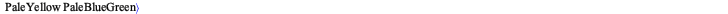

Initialization
| > | restart:
with(plots): with(LinearAlgebra): with(GraphTheory): interface(rtablesize=20): plots[setcolors]("spring"): c_set := ColorTools:-GetPalette("spring"); FONT_TYPE := "Helvetica": FONT_SIZE_LAB := 14: FONT_SIZE_TIT := 18: plots[setoptions](axes = boxed, size = [800,200], axis[2] = [gridlines = [linestyle=dot]], legendstyle = [location="top",font=[FONT_TYPE,FONT_SIZE_LAB]], labelfont = [FONT_TYPE,FONT_SIZE_LAB], axesfont = [FONT_TYPE,FONT_SIZE_LAB], titlefont = [FONT_TYPE,bold,FONT_SIZE_TIT], captionfont = [FONT_TYPE,italic, FONT_SIZE_TIT], labeldirections = [horizontal , vertical] ); |
 |
(1.1) |
| > | #alias(C=cos);
#alias(S=sin); |